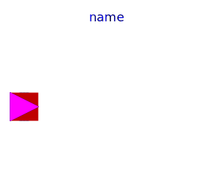

| Name |
Description |
|  PartialLumpedVessel |
Lumped volume with a vector of fluid ports and replaceable heat
transfer model |
 HeatTransfer HeatTransfer |
HeatTransfer models for vessels |
 VesselPortsData VesselPortsData |
Data to describe inlet/outlet ports at vessels: diameter --
Inner (hydraulic) diameter of inlet/outlet port height -- Height
over the bottom of the vessel zeta_out -- Hydraulic resistance out
of vessel, default 0.5 for small diameter mounted flush with the
wall zeta_in -- Hydraulic resistance into vessel, default 1.04 for
small diameter mounted flush with the wall |
 VesselFluidPorts_a VesselFluidPorts_a |
Fluid connector with filled, large icon to be used for
horizontally aligned vectors of FluidPorts (vector dimensions must
be added after dragging) |
 VesselFluidPorts_b VesselFluidPorts_b |
Fluid connector with outlined, large icon to be used for
horizontally aligned vectors of FluidPorts (vector dimensions must
be added after dragging) |